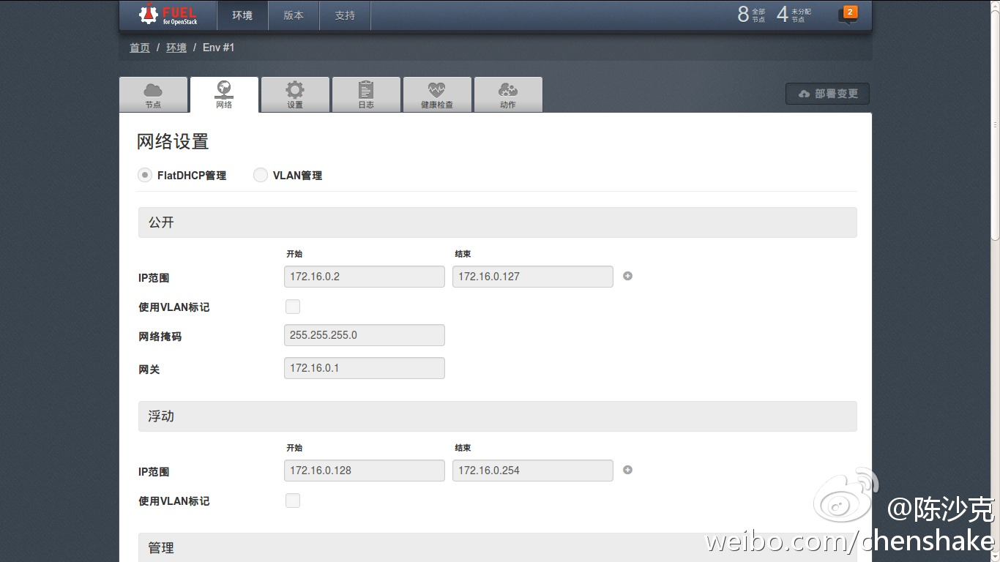

//@ben_杜玉杰:@trystack中文网 新版本还有部分内容尚未翻译完，希望大家努力赶在下个版本发布时完成@qyjohn_ @Ada李力 @马沛 @爱开源的贡献开源社区 //@-钟文佳-:FuelWeb语言切换菜单的hide标记被去掉了(网页链接，现在默认就能看到切换菜单，还有部分没翻译，要加快速度了@陈沙克:@ben_杜玉杰 做的好事，大家看看。网页链接 
转发微博@TryStack中文网:FuelWeb（网页链接）已经默认支持中/英切换啦，目前还有部分未翻译成中文，大家对翻译有任何的意见，请发至zhong.wenjia@99cloud.net，我们会及时更新。@ben_杜玉杰 @qyjohn_ @Ada李力 @马沛 @爱开源的贡献开源社区 @-钟文佳- #OpenStack#
自从我取消了微信中“加我为朋友时需要验证”，短时间内好友数迅速从500多上升到780，新增的大部分人都不认识。这是垃圾信息的主要来源。@Ada李力:圣诞祝福大家都用微信发了，新年祝福应该更会如此吧。- 微信上的祝福已经呈轰炸状态，现在就要考虑微信防垃圾的问题了。
 网页链接，现在默认就能看到切换菜单，还有部分没翻译，要加快速度了
网页链接，现在默认就能看到切换菜单，还有部分没翻译，要加快速度了